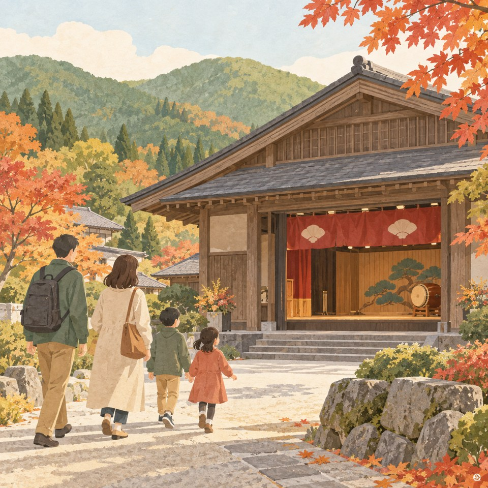
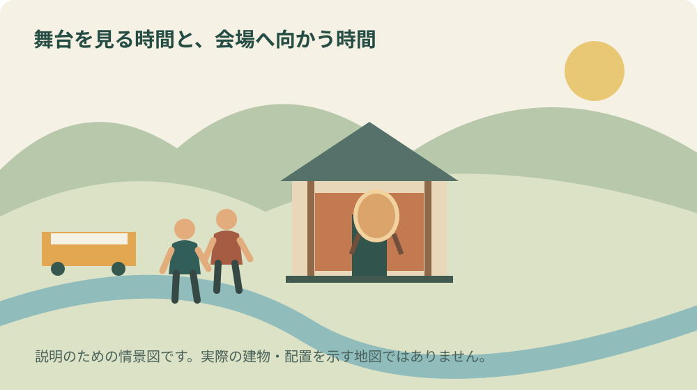
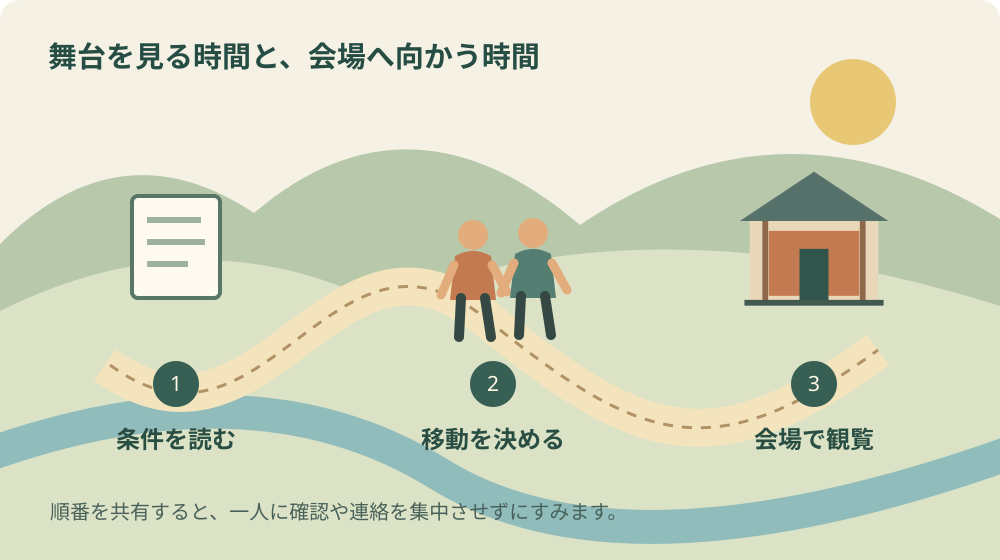

しずおか民俗芸能フェスティバル｜森町で観覧

表紙は内容を伝えるためのAI生成イラストです。実在の会場や当日の様子を撮影したものではありません。
この記事の要点
Q. 森町で開かれる民俗芸能フェスティバルは予約が必要ですか。
A. 県の案内では申込不要・無料です。2026年10月11日13時から15時30分、森町文化会館大ホールで開催予定。12時30分開場、全席自由、定員700人です。家族で集合時刻と帰り方を決め、出発前に公式案内を再確認してください。
森町で民俗芸能を見たいけれど、神社の祭礼へ初めて出かけるのは少し迷う。そんな家族にとって、文化会館で複数の芸能を見られる催しは入口になります。2026年10月11日のしずおか民俗芸能フェスティバルについて、9月26日に県と町の案内を確認しました。
ただし、舞台が整っているからといって、出演する人の準備が少なくなるわけではありません。衣装や道具を運ぶ人、稽古の時間を合わせる人、留守を支える家族がいるはずです。これは個々の保存会の実態を取材した記録ではなく、見る側が忘れずにいたい私の視点です。
大石浩之（磐田市／不動産業）として今回は、観覧の段取りを先に整理します。家族で共有したいのは「無料の催しがある」という一言だけではありません。開場時刻、帰り方、困ったときの確認先まで決めると、当日に慌てる用事を減らせます。
10月11日の観覧条件を一枚にまとめる
静岡県の開催案内では、2026年10月11日の日曜日、13時から15時30分まで、森町文化会館大ホールで開催予定です。会場住所は周智郡森町森1485。申込みは不要で観覧無料、全席自由、定員700人、開場は12時30分と案内されています。
家族の予定表には、開始の13時だけでなく12時30分の開場も書きます。開場時刻は到着を強制する時刻ではありませんが、入場と着席を考える基準にはなります。「13時に駅に着く」と「13時に客席に座る」は、同じ予定ではありません。
申込み不要は、座席をあらかじめ確保できるという意味ではありません。自由席で定員のある催しとして考えます。家族が別々に来るなら、先に到着した人へ大量の席取りを頼むのでなく、どこで合流して一緒に入るかを話しておく方が落ち着きます。
入場の締切、途中入退場、写真撮影、録音、子どもの年齢による条件は、今回確認した県の概要欄からは判断できません。自由にできると推測して書かず、気になる条件をまとめて主催者へ確認します。会場内では当日の掲示と係員の案内を優先します。
5つの芸能を「違いに気づく入口」として見る
県の出演案内には、森町の天宮神社十二段舞楽、浜松市の寺野のひよんどりと呉松の大念仏、富士宮市の富士宮囃子、焼津市の焼津神社獅子木遣りが掲載されています。出演順や個々の演目の所要時間は、名称の掲載順だけでは確定できません。
私は、初めて見るときに全部の由来を暗記する必要はないと考えます。動きの速さ、音を出す道具、舞う人と奏でる人の関係など、一つ気になったところを持ち帰れれば十分です。分からない部分を分かったことにして評点を付けるより、次に知りたい問いを残します。
子どもと見るなら、舞台が始まる前に「どんな音が聞こえたか、帰りに一つ教えて」と話す方法があります。静かに座ることだけを課題にすると、親子とも疲れます。感想を答え合わせにせず、見えたものの違いを家族の会話にするのが私の提案です。
舞台で見る演目と、土地の祭礼の中で行われる奉納を同一視しないことも大切にしたい点です。今回の上演範囲や構成を私は確認できていません。会館で興味を持った後に、森町に伝わる三つの舞楽を紹介した記事で、場所と行事の背景を読み直す順番がよいと思います。
会館の席数と、この催しの定員は別の数字
森町の施設案内は、大ホールに固定席797席と車イス専用席3席があると説明しています。一方、今回の県の開催案内は定員700人です。建物に備わる席数と催しが受け入れる人数は別なので、来場判断には開催案内の700人を使います。
差の100人について、設備配置や感染対策などの理由を推測することはしません。主催者が理由を公表していると確認できないからです。数字が違うときに、都合のよい大きな方を採用しない。この習慣は、施設の利用でも不動産の資料読みでも共通します。
車イス専用席が施設にあることも、その日の利用方法や空きを保証しません。同伴者の座り方、入口から席までの経路、必要な手助けは、参加前に主催者と会館へ相談します。相談した日時と担当窓口を家族の一人だけが覚える形にせず、短いメモに残すと引継ぎができます。
町の紹介では、横幅を広く、奥行きを浅くした客席や舞楽用の仮設舞台にも触れています。私が良いと感じるのは、地域の芸能を受け入れる設備の説明があることです。ただし、座る位置ごとの見え方や当日の舞台構成まで保証する記述としては扱いません。

車か鉄道かを、帰りの負担から選ぶ
森町のアクセス案内による徒歩の目安は、天竜浜名湖鉄道の森町病院前駅から約1分、遠州森駅から約10分です。道を探す時間や横断、同行者の歩く速さを含めた個別の所要時間ではありません。駅名と会館名を並べて、行き帰りの経路を確認します。
列車を選ぶ場合、行きの到着だけでなく終演後の便も調べます。15時30分の終演予定と同時に駅のホームへ着けるわけではありません。客席を出る時間、トイレ、合流までを見込み、一本逃したときの過ごし方も考えておくと、出口へ急ぐ必要が減ります。
車なら、運転担当を往復で決めます。家族を乗せ降ろしする場所を駐車場の入口付近だと決めつけず、当日の誘導を見ます。雨の場合に誰が傘を持ち、荷物を誰が運ぶかまで一言交わしておけば、停車したまま相談する時間を短くできます。
会館の「公演日の駐車場について」では、建物南側250台と、近隣企業の協力による臨時駐車場が案内されています。2019年の一般アクセスページには270台という別の記載もあります。私は新しい駐車場案内の数値を示しつつ、空きが必ずあるとは案内しません。
臨時駐車場の場所は、当日の看板や係員の案内を確認します。このフェスティバルでどの区画が開くかまでは確認できていません。普段空いて見える事業所の敷地を、催しの駐車場だと判断して入らないこと。土地の所有者の協力と、誰でも使える権利は違います。
家族の送迎では「入口で待っていて」の一言が行き違いを生みます。建物のどの側か、車が来るまでどこで待つか、連絡がつかなければどうするかを決めます。催しの日の交通と駐車の確認も、移動の段取りを考える補助になります。
良い点：無料で、町外の芸能にも触れられる
私が評価するのは、森町の芸能と町外の芸能に一度の来場で触れられることです。特定の団体を以前から応援している人だけでなく、初めて名前を知る人にも入口ができます。観覧料がないことは、家族で出かける際の家計の見通しを立てやすくします。
ただし、無料でも外出の負担がゼロになるわけではありません。交通費、食事、同行者の休憩、留守中の用事があります。私は催し自体の価値と、家族がその日に参加できるかを分けてよいと思います。見送る選択をした人まで、地域文化に関心がないと決めつけません。
もう一つの良い点は、開場、開演、終演予定、定員がまとまって公表されていることです。出演者紹介だけの告知に比べ、暮らしの予定へ入れやすい情報です。家族へ転送するときは画像の一部を切り取るより、更新を確かめられる県の案内ページも一緒に渡します。
注文したい点：初めて来る人の迷いを減らしたい
私からの注文は、来場前のよくある疑問が一か所で分かることです。途中入退場、撮影、車イス席の相談方法、満員時の案内などが分かれば、見る側が質問を整理しやすくなります。今回確認した概要に掲載がないことと、主催者に対応がないことは別です。
主催者へ細かな情報を無制限に増やしてほしいわけではありません。同じ問い合わせが重なる内容を、短い追記で共有できればよいと思います。回答の窓口と更新日がはっきりしていれば、保存会の人へ個別に尋ねる負担も減らせます。
駐車台数の記載がページによって異なる点も、利用者には戸惑いになります。単に数字をそろえるだけでなく、どの範囲の台数かが分かると助かります。私は施設管理の実態を確認していないため、どちらかが誤りだとは断定しません。来場者として最新案内を確かめる姿勢を取ります。
対案・結論：家族で共有するのは三つの時刻と役割
今日できる小さな一歩は、家族の予定表へ、集合時刻、12時30分の開場、15時30分の終演予定を書き込むことです。集合時刻は、出発地と移動手段に合わせて家族で決めます。県の案内にない推奨到着時刻を、主催者の決まりのように扱いません。
次に、交通情報を調べる人、必要な配慮を問い合わせる人、当日の連絡を受ける人を決めます。すべてを一人が抱えず、難しければ「今回は問い合わせだけ担当する」と範囲を切ります。家族の中の手配係にも、舞台を支える人と同様に時間の限りがあります。
確認事項は、すでに公式案内にある事柄と、載っていない事柄を分けます。日時や住所を読み取ったうえで、未確認の条件だけをまとめて聞きます。問い合わせの回答を家族へ共有しないと、別の人が同じ電話をすることになります。回答の共有までを一つの仕事と考えます。
予定を共有するときは、会場が森町文化会館であることを文字で残します。出演団体の神社名だけを見て、その神社へ向かわないためです。地図アプリへ入れる住所と開催案内の住所を照らし合わせ、集合場所のメモには入口の目印も加えます。
体調や天候で外出を見送る場合に、誰へ連絡するかも決めておきます。家族の全員が同じ距離を歩けるとは限りません。行ける人数を無理にそろえるより、本人が参加したいか、途中で休みたいかを聞いてから交通手段を組むのが私の考えです。
文化会館を借りて行事を開く側の段取りが気になったら、準備と撤去を含めた文化会館の利用も読んでみてください。見る側には見えない時間を知ると、終演後に通路を空ける、帰り支度を落ち着いてする、といった協力の理由が分かります。

大石の視点：建物の魅力は、使い続ける段取りと一組
私は、文化施設が近くにあることを、森町で暮らす魅力の一つとして考えます。ただ、住宅の地図に文化会館の印があるだけでは、その家族に使いやすいかは分かりません。徒歩、鉄道、送迎のどれを使い、帰宅後の用事までどうつなぐかを見る必要があります。
不動産を選ぶ際も、距離と生活の動きは分けて確かめたいと考えています。これは今回の観覧者を案内した実話ではなく、私の実務上の判断です。物件見学の日だけ車で便利でも、運転できない日の外出をどう支えるかは、別の確認事項として残ります。
一方で、催しのために一度訪れた印象だけで、移住や家の処分を決めるのは早いという迷いもあります。華やかな日と普段の日では、町の動きが違います。町を知る入口として楽しみ、その後で買い物や通院など普段の移動を別の日に試す順番が、私には納得できます。
実家が森町にある家族なら、観覧の予定と実家の用事を一日に詰め込み過ぎないことも提案します。鍵、郵便物、庭の確認など、実家カルテに残したい用事は別に整理できます。売却するかどうかを決めていなくても、家族が把握していることを共有する意味はあります。
地域の催しは、出演時間だけでは続きません。祭りを支える準備と片付けで考えたように、見る側が移動や連絡の段取りを整えることも、現場の負担を増やさない参加の仕方です。特別な支援を約束する前に、自分の来場を丁寧に組み立てます。
よくある質問
予約なしで、必ず座れますか。
申込み不要ですが、県の案内は全席自由・定員700人です。予約不要という条件だけで座席の確保まで保証されるとは読めません。満員時の対応や席の確保方法は今回の概要では確認できませんでした。気になる場合は主催者へ確認し、当日は掲示と係員の案内に従ってください。
車イスで観覧する場合はどうしますか。
町の施設紹介には車イス専用席3席の記載があります。ただし、この催しの利用手続き、同伴席、空き状況を示すものではありません。必要な配慮と同行人数を整理し、主催者や会館へ事前相談してください。本人の希望を先に聞き、家族だけで移動方法を決めないことも提案します。
森町病院前駅から歩いて行けますか。
町のアクセス案内では徒歩約1分です。個々の歩行速度、天候、横断や会場入口までの動きを保証する時間ではありません。行きの列車だけでなく帰りの時刻も確認してください。終演と同時に駅へ着ける予定にはせず、退出と合流の余裕を取ると落ち着いて観覧できます。
まとめ：開場時刻と帰り方を先に共有する
10月11日の観覧は、県の開催案内を家族へ送り、集合時刻と帰り方を決めるところから始めます。芸能の知識が十分でなくても、何に興味を持ったかを一つ持ち帰る楽しみ方ができます。開催条件は変更の可能性があるため、出発前にも公式案内を確認してください。
公式情報源
- 静岡県・しずおか民俗芸能フェスティバル（2026年9月26日確認）
- 森町・文化会館アクセス（2026年9月26日確認）
- 森町・公演日の駐車場について（2026年9月26日確認）
- 森町・大ホール、リハーサル室、楽屋（2026年9月26日確認）
制度・開催条件・営業状況は変わる場合があります。個別の利用条件は各主催者や担当窓口へ確認してください。

磐田市で不動産業を営む宅地建物取引士。富士ヶ丘サービス株式会社。森町の暮らしと、地域を支える段取りを一次情報から考えます。
プロフィール・編集方針